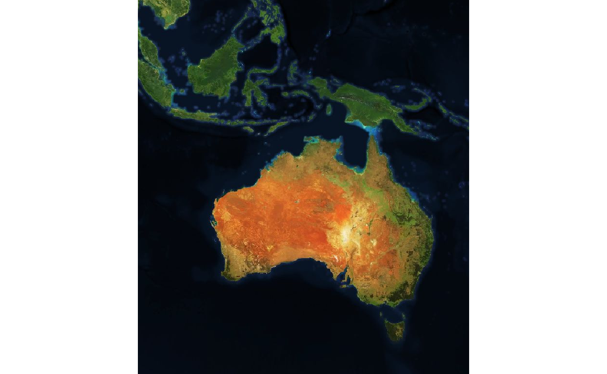
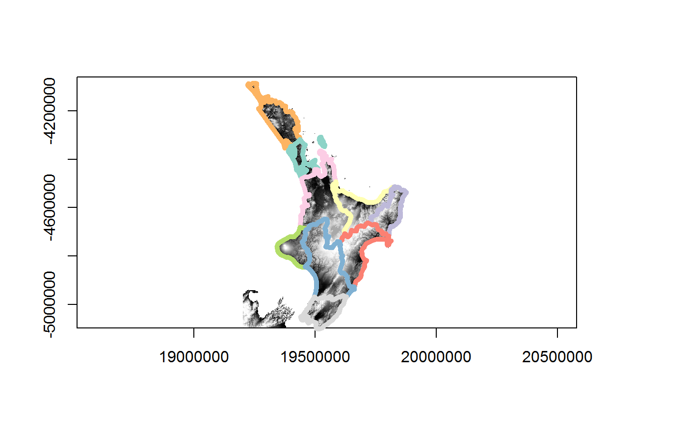

The goal of ceramic is to obtain web map tiles. Use a spatial object to define the region of interest.
library(ceramic)
roi <- raster::extent(100, 160, -50, 10)
(im <- cc_location(roi))
#> Preparing to download: 16 tiles at zoom = 4 from
#> https://api.mapbox.com/v4/mapbox.satellite/
#> class : RasterBrick
#> dimensions : 774, 684, 529416, 3 (nrow, ncol, ncell, nlayers)
#> resolution : 9783.94, 9783.94 (x, y)
#> extent : 11124339, 17816554, -6056259, 1516511 (xmin, xmax, ymin, ymax)
#> crs : +proj=merc +a=6378137 +b=6378137
#> source : memory
#> names : layer.1, layer.2, layer.3
#> min values : 0, 0, 0
#> max values : 255, 253, 227
raster::plotRGB(im)
We can use raster, sp, or sf objects to define an extent. This provides a very easy way to obtain imagery or elevation data for any almost any region using our own data.
ne <- rnaturalearth::ne_countries(returnclass = "sf")
im_nz <- cc_location(subset(ne, name == "New Zealand"))
#> Preparing to download: 12 tiles at zoom = 6 from
#> https://api.mapbox.com/v4/mapbox.satellite/
raster::plotRGB(im_nz)
Even if the data uses a map projection it will be converted into a region to match the Mercator extents used by Mapbox image servers.
data("nz", package = "spData")
library(sf)
#> Linking to GEOS 3.7.0, GDAL 2.4.0, PROJ 5.2.0
im_nz2 <- cc_location(nz)
#> Preparing to download: 12 tiles at zoom = 6 from
#> https://api.mapbox.com/v4/mapbox.satellite/
raster::plotRGB(im_nz2)
plot(st_transform(nz, raster::projection(im_nz2)), add = TRUE, col = rainbow(nrow(nz), alpha = 0.5))
#> Warning in plot.sf(st_transform(nz, raster::projection(im_nz2)), add =
#> TRUE, : ignoring all but the first attribute
Raster elevation data is also available.
north <- nz[nz$Island == "North", ]
dem_nz <- cc_elevation(north)
#> Preparing to download: 15 tiles at zoom = 7 from
#> https://api.mapbox.com/v4/mapbox.terrain-rgb/
## plot elevation data for NZ north
dem_nz[!dem_nz > 0] <- NA
raster::plot(dem_nz, col = grey(seq(0, 1, length = 51)), breaks = quantile(raster::values(dem_nz), seq(0, 1, length = 52), na.rm = TRUE), legend = FALSE)
plot(st_transform(st_cast(north, "MULTILINESTRING")["Name"], raster::projection(dem_nz)), add = TRUE, lwd = 5)
I thought you said tiles?
Indeed, the cc_location() and cc_elevation() functions run get_tiles() behind the scenes.
This function and its counterparts get_tiles_zoom(), get_tiles_dim() and get_tiles_buffer() will only download files.
tile_summ <- get_tiles_zoom(north, zoom = 8)
#> Preparing to download: 48 tiles at zoom = 8 from
#> https://api.mapbox.com/v4/mapbox.satellite/
length(tile_summ$files)
#> [1] 48
str(tile_summ$tiles)
#> List of 2
#> $ tiles:'data.frame': 48 obs. of 2 variables:
#> ..$ x: int [1:48] 250 251 252 253 254 255 250 251 252 253 ...
#> ..$ y: int [1:48] 153 153 153 153 153 153 154 154 154 154 ...
#> ..- attr(*, "out.attrs")=List of 2
#> .. ..$ dim : Named int [1:2] 6 8
#> .. .. ..- attr(*, "names")= chr [1:2] "x" "y"
#> .. ..$ dimnames:List of 2
#> .. .. ..$ x: chr [1:6] "x=250" "x=251" "x=252" "x=253" ...
#> .. .. ..$ y: chr [1:8] "y=153" "y=154" "y=155" "y=156" ...
#> $ zoom : num 8
#> - attr(*, "class")= chr "tile_grid"This is really for expert use when you want to control the downloaded tile files yourself directly.
Providers
The default map provider is Mapbox, but ceramic is written for general usage and also provides access to the joerd tiles via the type = "elevation-tiles-prod" argument.
pt <- cbind(175.6082, -37.994)
nz_z12 <- cc_location(pt, zoom = 12, type = "elevation-tiles-prod")
#> Preparing to download: 4 tiles at zoom = 12 from
#> https://s3.amazonaws.com/elevation-tiles-prod/geotiff/Use max_tiles or zoom to increase or decrease resolution.
im1 <- cc_location(im_nz, debug = TRUE)
#> Preparing to download: 12 tiles at zoom = 6 from
#> https://api.mapbox.com/v4/mapbox.satellite/
#> [1] "/perm_storage/home/mdsumner/.cache/.ceramic/api.mapbox.com/v4/mapbox.satellite/6/61/38.jpg"
#> [1] "/perm_storage/home/mdsumner/.cache/.ceramic/api.mapbox.com/v4/mapbox.satellite/6/62/38.jpg"
#> [1] "/perm_storage/home/mdsumner/.cache/.ceramic/api.mapbox.com/v4/mapbox.satellite/6/63/38.jpg"
#> [1] "/perm_storage/home/mdsumner/.cache/.ceramic/api.mapbox.com/v4/mapbox.satellite/6/61/39.jpg"
#> [1] "/perm_storage/home/mdsumner/.cache/.ceramic/api.mapbox.com/v4/mapbox.satellite/6/62/39.jpg"
#> [1] "/perm_storage/home/mdsumner/.cache/.ceramic/api.mapbox.com/v4/mapbox.satellite/6/63/39.jpg"
#> [1] "/perm_storage/home/mdsumner/.cache/.ceramic/api.mapbox.com/v4/mapbox.satellite/6/61/40.jpg"
#> [1] "/perm_storage/home/mdsumner/.cache/.ceramic/api.mapbox.com/v4/mapbox.satellite/6/62/40.jpg"
#> [1] "/perm_storage/home/mdsumner/.cache/.ceramic/api.mapbox.com/v4/mapbox.satellite/6/63/40.jpg"
#> [1] "/perm_storage/home/mdsumner/.cache/.ceramic/api.mapbox.com/v4/mapbox.satellite/6/61/41.jpg"
#> [1] "/perm_storage/home/mdsumner/.cache/.ceramic/api.mapbox.com/v4/mapbox.satellite/6/62/41.jpg"
#> [1] "/perm_storage/home/mdsumner/.cache/.ceramic/api.mapbox.com/v4/mapbox.satellite/6/63/41.jpg"
im2 <- cc_location(im_nz, zoom = 7)
#> Preparing to download: 35 tiles at zoom = 7 from
#> https://api.mapbox.com/v4/mapbox.satellite/
im1
#> class : RasterBrick
#> dimensions : 736, 548, 403328, 3 (nrow, ncol, ncell, nlayers)
#> resolution : 2445.985, 2445.985 (x, y)
#> extent : 18533228, 19873627, -5845904, -4045659 (xmin, xmax, ymin, ymax)
#> crs : +proj=merc +a=6378137 +b=6378137
#> source : memory
#> names : layer.1, layer.2, layer.3
#> min values : 0, 4, 0
#> max values : 255, 255, 255
im2
#> class : RasterBrick
#> dimensions : 1470, 1095, 1609650, 3 (nrow, ncol, ncell, nlayers)
#> resolution : 1222.992, 1222.992 (x, y)
#> extent : 18534451, 19873627, -5844681, -4046882 (xmin, xmax, ymin, ymax)
#> crs : +proj=merc +a=6378137 +b=6378137
#> source : memory
#> names : layer.1, layer.2, layer.3
#> min values : 0, 5, 0
#> max values : 255, 255, 255Installation
You can install the development version of ceramic from Github.
Set your mapbox API key with
Example
This complete example gets tiled imagery that we can use as real data.
The code here
- generates a bounding box in longitude-latitude
- uses slippymath to find sensible tiles for the region
- downloads them to a local cache
- georeferences them and merges the tiles into a sensible raster object
library(ceramic)
## a point in longlat, and a buffer with in metres
pt <- cbind(136, -34)
im <- cc_location(pt, buffer = c(1e6, 5e5), type = "mapbox.satellite")
#> Preparing to download: 12 tiles at zoom = 6 from
#> https://api.mapbox.com/v4/mapbox.satellite/
library(raster)
#> Loading required package: sp
plotRGB(im)
## get the matching tiles (zoom is magic here, it's all wrapped - needs thought)
tiles <- ceramic_tiles(zoom = 6, type = "mapbox.satellite")
library(sf)
plot(st_geometry(ceramic:::tiles_to_polygon(tiles)), add = TRUE)
middle <- function(x, y) {
x + (y - x)/2
}
text(middle(tiles$xmin, tiles$xmax), middle(tiles$ymin, tiles$ymax), lab = sprintf("[%i,%i]", tiles$tile_x, tiles$tile_y),
col = "firebrick")
Local caching of tiles
A key feature of ceramic is caching, all data is downloaded in a systematic way that is suitable for later re-use. Many tools for imagery services treat the imagery as transient, but here we take control over the raw data itself. All file names match exactly the address URL of the original source data.
There is a helper function to find existing tiles.
aa <- cc_location(loc = cbind(0, 0), buffer = 330000, type = "mapbox.satellite")
#> Preparing to download: 16 tiles at zoom = 7 from
#> https://api.mapbox.com/v4/mapbox.satellite/
ceramic_tiles(zoom = 7, type = "mapbox.satellite")
#> # A tibble: 76 x 11
#> tile_x tile_y zoom type version source fullname xmin xmax
#> <int> <int> <int> <chr> <chr> <chr> <fs::path> <dbl> <dbl>
#> 1 113 79 7 mapb… v4 api.m… /perm_sto… 1.53e7 1.57e7
#> 2 113 80 7 mapb… v4 api.m… /perm_sto… 1.53e7 1.57e7
#> 3 113 81 7 mapb… v4 api.m… /perm_sto… 1.53e7 1.57e7
#> 4 114 79 7 mapb… v4 api.m… /perm_sto… 1.57e7 1.60e7
#> 5 114 80 7 mapb… v4 api.m… /perm_sto… 1.57e7 1.60e7
#> 6 114 81 7 mapb… v4 api.m… /perm_sto… 1.57e7 1.60e7
#> 7 115 79 7 mapb… v4 api.m… /perm_sto… 1.60e7 1.63e7
#> 8 115 80 7 mapb… v4 api.m… /perm_sto… 1.60e7 1.63e7
#> 9 115 81 7 mapb… v4 api.m… /perm_sto… 1.60e7 1.63e7
#> 10 116 79 7 mapb… v4 api.m… /perm_sto… 1.63e7 1.66e7
#> # … with 66 more rows, and 2 more variables: ymin <dbl>, ymax <dbl>and every row has the extent values useable directly by raster:
ceramic_tiles(zoom = 7, type = "mapbox.satellite") %>%
dplyr::slice(1:5) %>%
purrr::transpose() %>%
purrr::map(~raster::extent(unlist(.x[c("xmin", "xmax", "ymin", "ymax")])))
#> [[1]]
#> class : Extent
#> xmin : 15341217
#> xmax : 15654303
#> ymin : -5009377
#> ymax : -4696291
#>
#> [[2]]
#> class : Extent
#> xmin : 15341217
#> xmax : 15654303
#> ymin : -5322463
#> ymax : -5009377
#>
#> [[3]]
#> class : Extent
#> xmin : 15341217
#> xmax : 15654303
#> ymin : -5635549
#> ymax : -5322463
#>
#> [[4]]
#> class : Extent
#> xmin : 15654303
#> xmax : 15967389
#> ymin : -5009377
#> ymax : -4696291
#>
#> [[5]]
#> class : Extent
#> xmin : 15654303
#> xmax : 15967389
#> ymin : -5322463
#> ymax : -5009377Another example
my_bbox <-
st_bbox(c(xmin = 144,
xmax = 147.99,
ymin = -44.12,
ymax = -40),
crs = st_crs("+proj=longlat +ellps=WGS84"))
im <- cc_location(cbind(145.5, -42.2), buffer = 5e5)
#> Preparing to download: 6 tiles at zoom = 6 from
#> https://api.mapbox.com/v4/mapbox.satellite/
plotRGB(im)
plot(st_transform(ozmaps::abs_lga$geometry, projection(im)), add = TRUE, lwd = 2, border = "white")
An internal function sets up a plot of tiles at particular zoom levels.

tile plot
And we can add the tiles to an existing plot.
tile add plot
Future improvements
See the Issue tab and please make suggestions and give feedback!
Please note that the ‘ceramic’ project is released with a Contributor Code of Conduct. By contributing to this project, you agree to abide by its terms.